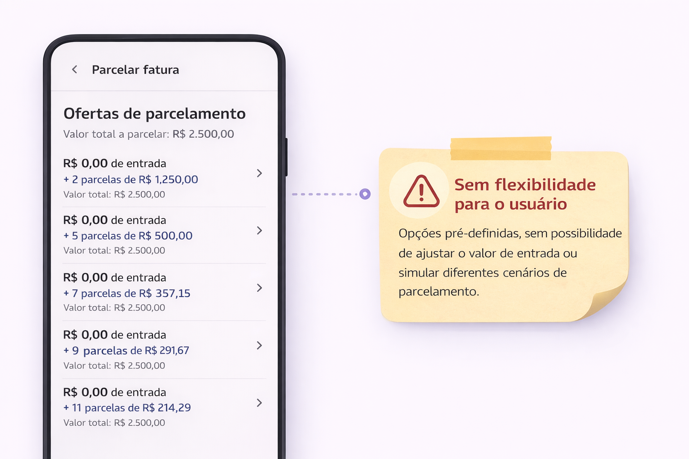
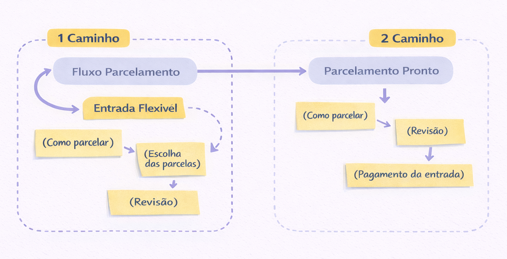
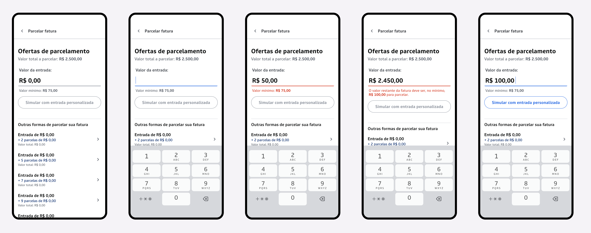
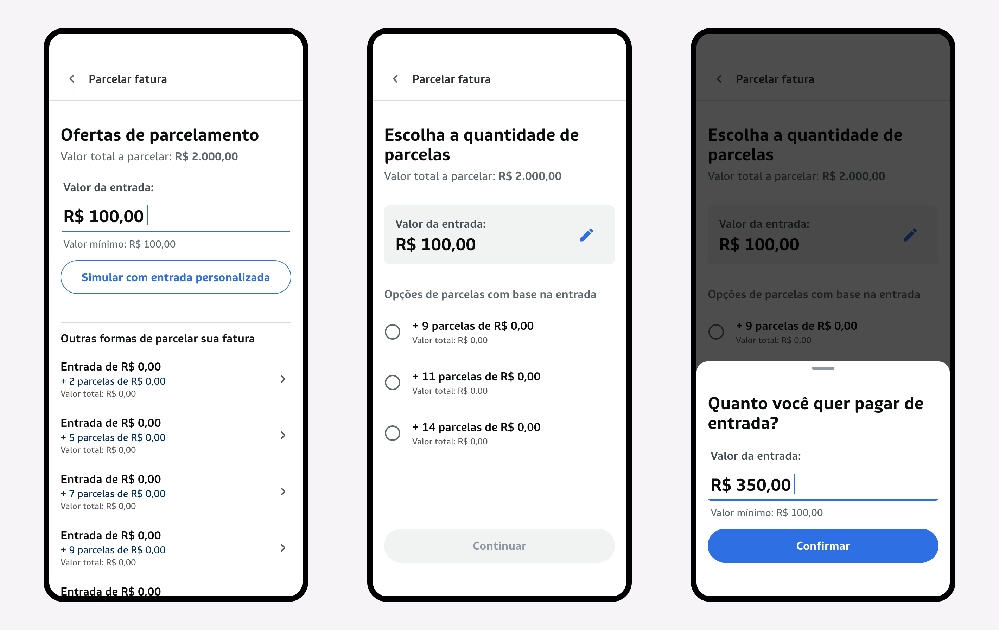

Como levei mais controle ao usuário no parcelamento
Criei uma funcionalidade de entrada flexível no parcelamento de fatura do Banco Blue, permitindo que o usuário personalize o valor de entrada antes da contratação e tenha mais autonomia sobre a operação.

Visão geral
A jornada de parcelamento de fatura possuía opções pré-definidas de entrada, sem permitir que o usuário ajustasse esse valor de acordo com sua realidade financeira.
A partir de uma demanda de negócio, surgiu a necessidade de oferecer mais flexibilidade nessa etapa, considerando que o valor de entrada impacta diretamente o total financiado, as parcelas e o custo final da operação.
Como resposta, foi proposta a funcionalidade de entrada flexível, permitindo que o usuário defina, de forma opcional, o valor de entrada antes de contratar o parcelamento.
O objetivo foi tornar a experiência mais adaptável, aumentar a percepção de controle do usuário e apoiar uma tomada de decisão mais consciente durante o processo.
Meu papel
Atuei como Product Designer de ponta a ponta, sendo responsável por estruturar a funcionalidade dentro da jornada existente de parcelamento, desde a definição da solução até a entrega para desenvolvimento.
- Participei do discovery, entendendo a demanda de negócio e o contexto da funcionalidade
- Estruturei o service design, definindo como a nova funcionalidade se integraria à jornada existente
- Defini a experiência e o conceito das telas, garantindo clareza e consistência na interação
- Desenhei fluxos e protótipos das etapas de oferta, simulação e edição de entrada
- Traduzi regras de negócio complexas em interações simples e compreensíveis
- Documentei a solução de forma detalhada para apoiar o desenvolvimento
O problema
Mesmo com a jornada de parcelamento já estruturada, a experiência ainda oferecia pouca flexibilidade para o usuário no momento da contratação.
Sem a possibilidade de definir um valor de entrada personalizado, a decisão ficava restrita às condições apresentadas pelo sistema, reduzindo a percepção de controle sobre o valor financiado, as parcelas e o custo total da operação.
O desafio do projeto foi incorporar essa nova possibilidade dentro de uma jornada já existente, mantendo a experiência clara, previsível e compatível com as regras financeiras do produto.

O contexto da funcionalidade
Como a jornada de parcelamento já estava consolidada, a decisão não foi redesenhar o fluxo, mas evoluir a experiência existente de forma incremental.
A proposta foi inserir a entrada flexível como uma nova camada dentro da jornada atual, ampliando o controle do usuário no momento da contratação sem alterar a estrutura principal do fluxo.
Essa abordagem permitiu equilibrar a introdução de uma nova funcionalidade com a necessidade de manter consistência, previsibilidade e alinhamento com o comportamento esperado pelo usuário.

Regras de negócio
Como a funcionalidade impacta diretamente o cálculo financeiro do parcelamento, foi necessário estruturar regras claras e consistentes para garantir segurança na operação.
- Entrada mínima de 3% do valor da fatura, com piso de R$ 45,00
- Bloqueio de valores abaixo do mínimo permitido
- Garantia de saldo financiável mínimo de R$ 100,00
- Recalculo automático do valor financiado, parcelas e total a pagar
Mais do que definir essas regras, o desafio foi traduzir essas restrições em uma experiência clara, garantindo que o usuário entendesse os limites da funcionalidade durante a interação.
Para isso, as validações foram incorporadas diretamente à interface, com feedback em tempo real durante a digitação do valor de entrada.

Solução
A solução permite que o usuário defina um valor de entrada personalizado ainda na etapa de ofertas, antes de avançar para a simulação do parcelamento.
A funcionalidade foi estruturada em dois momentos principais da jornada:
- Tela de ofertas, onde o usuário informa o valor de entrada e inicia a simulação
- Tela de simulação, com opções de parcelamento recalculadas em tempo real com base no valor informado
Para manter a fluidez da experiência, o usuário pode editar o valor da entrada sem sair do fluxo, por meio de uma modal de edição contextual.
Essa estrutura garante continuidade na jornada, reduz atrito e reforça a sensação de controle durante a tomada de decisão.

Decisões de design e interação
A experiência foi desenhada para garantir previsibilidade e controle ao usuário em uma jornada de decisão financeira, traduzindo regras complexas em interações simples e compreensíveis.
Para isso, algumas decisões foram fundamentais:
- Validação em tempo real durante a digitação, antecipando erros e evitando frustração
- Exibição contínua do valor mínimo, oferecendo referência clara durante a interação
- Formatação automática do valor em reais, reduzindo esforço cognitivo
- Bloqueio de ações inválidas, como o botão desabilitado até que o valor seja válido
- Edição da entrada dentro do fluxo, sem necessidade de reiniciar a jornada
- Consistência entre oferta, simulação e revisão, garantindo previsibilidade
Essas decisões ajudaram a reduzir incertezas, evitar erros e aumentar a clareza, tornando a experiência mais fluida e alinhada ao contexto da decisão do usuário.

Valor gerado
A funcionalidade ampliou o controle do usuário sobre a contratação do parcelamento, permitindo uma decisão mais personalizada e alinhada à sua realidade financeira.
Ao tornar visível o impacto da entrada no valor financiado e nas parcelas, a experiência passou a oferecer mais transparência e previsibilidade durante a tomada de decisão.
Do ponto de vista de produto, a solução adiciona uma nova camada de personalização à jornada existente, sem substituir as ofertas padrão, aumentando a flexibilidade sem gerar ruptura na experiência.
Com isso, a funcionalidade contribui para uma jornada mais clara, confiável e adaptável, fortalecendo a relação do usuário com o produto.
Aprendizados
Este projeto reforçou a importância de evoluir jornadas existentes com intenção, buscando gerar valor real sem necessariamente reconstruir toda a experiência.
Também evidenciou o papel do design na tradução de regras de negócio complexas em interações simples, garantindo que o usuário compreenda os limites e impactos das suas decisões ao longo da jornada.
Por fim, reforçou como clareza, previsibilidade e feedback em tempo real são essenciais em contextos financeiros, onde pequenas decisões têm impacto direto na vida do usuário.
Obrigada por ler este projeto
Este case reflete minha forma de trabalhar, unindo visão de produto, regras de negócio e experiência do usuário para construir soluções mais claras, úteis e consistentes.
Busco sempre transformar complexidade em experiências simples, mantendo equilíbrio entre necessidades do negócio e entendimento do usuário.